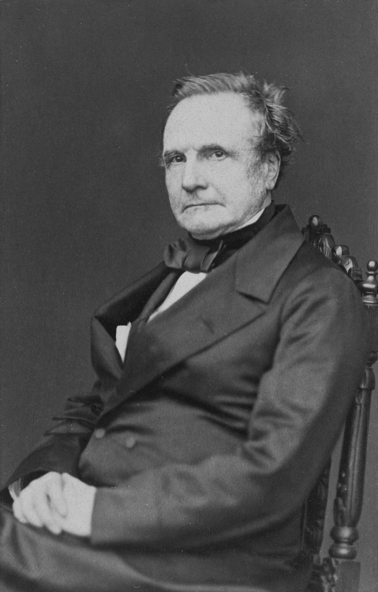

قبل از اینکه برنامهنویسها ساعتها جلوی مانیتور بنشینن و با یک نقطهویرگول اشتباه بجنگن، انسانها دنبال راهی بودن تا محاسبات رو به ماشین بسپارن.
یکی از چهرههای مهم این داستان، بلز پاسکاله.
پاسکال در قرن هفدهم ماشین محاسباتی مکانیکیای ساخت که میتونست برخی عملیات حسابی، از جمله جمع و تفریق، رو انجام بده. این دستگاه که معمولاً با نام Pascaline شناخته میشه، از سازوکارهای مکانیکی برای نمایش و انجام محاسبات استفاده میکرد.
چند دهه بعد، گوتفرید ویلهلم لایبنیتس ( چه اسم روان و ساده ای ) هم روی ماشینهای محاسباتی کار کرد و ایده انجام عملیات بیشتری رو توسعه داد.
این دستگاهها با کامپیوترهای امروزی فاصله زیادی داشتن، اما یک تغییر مهم رو نشون میدادن: میشد بخشی از کار ذهنی انسان رو به یک سازوکار فیزیکی سپرد.
رؤیایی بزرگتر از یک ماشین حساب
حالا تصور کن فقط نخواهی یک جمع یا تفریق انجام بدی.
فرض کن بخوای یک ماشین داشته باشی که طبق مجموعهای از دستورها، محاسبات پیچیدهتری رو اجرا کنه.
چارلز ببیج در قرن نوزدهم روی ایده ماشینهای محاسباتی مکانیکی کار کرد. ماشین تفاضلی او برای محاسبات عددی مشخصی طراحی شده بود و ماشین تحلیلی۱اش طرحی بسیار گستردهتر داشت.

ماشین تحلیلی قرار بود بخشهایی برای نگهداری اطلاعات، انجام عملیات، کنترل مراحل و دریافت دستورها داشته باشه.
این شباهتهای مفهومی باعث شده که از طرح ماشین تحلیلی ببیج بهعنوان یکی از پیشگامان مهم تاریخ کامپیوترهای قابلبرنامهریزی یاد بشه.
اما یک نکته مهم وجود داره: طرح ماشین تحلیلی در زمان ببیج به شکل یک کامپیوتر کامل و عملیاتی با قابلیتهای امروزی ساخته نشد.
پس نباید تصور کنیم که ببیج یک لپتاپ مکانیکی ساخته بود که فقط ظاهرش فرق داشت!
آدا لاولیس و پرسشی که فراتر از محاسبه رفت
آدا لاولیس در بررسی ماشین تحلیلی ببیج، درباره قابلیتهای آن نوشت و مجموعهای از ایدهها رو مطرح کرد که در تاریخ برنامهنویسی اهمیت زیادی پیدا کردن.
او توضیح داد که اگر یک ماشین بتونه نمادها رو بر اساس قواعد مشخص پردازش کنه، قابلیتهای اون لزوماً به محاسبه عددی محدود نمیمونه.
در یادداشتهای او، الگوریتمی برای محاسبه اعداد برنولی۲ با ماشین تحلیلی توصیف شده که معمولاً در بحث تاریخ برنامهنویسی بهش اشاره میشه.
به همین دلیل، آدا لاولیس اغلب بهعنوان یکی از پیشگامان برنامهنویسی شناخته میشه.
اما ارزش داستان فقط در این نیست که چه کسی «اولین برنامه» رو نوشت. اهمیت اصلی در اینه که ایده برنامهریزی یک ماشین، از انجام یک محاسبه مشخص فراتر رفت.
ماشین میتونست قرار باشه مجموعهای از دستورها رو دنبال کنه.

و این، یک قدم بزرگ به سمت کامپیوترهای قابلبرنامهریزی بود.
چرا این ماشینها به کامپیوترهای امروزی تبدیل نشدن؟
فناوری محدودیت داشت.
ساخت قطعات مکانیکی بسیار دقیق، هزینه بالا، دشواری تولید، مشکلات مهندسی و محدودیتهای صنعتی، همگی مانعهایی بودن که اجرای چنین ایدههایی رو دشوار میکردن.
گاهی یک ایده از فناوری زمان خودش جلوتره.
این اتفاق هنوز هم میافته: ممکنه ایدهای از نظر نظری جذاب باشه، اما برای اجرای عملی اون به سختافزار، انرژی، مواد یا ابزارهایی نیاز داشته باشیم که هنوز در دسترس نیستن.
پاورقیها و توضیحات
- ماشین تحلیلی: طرح چارلز ببیج (از حدود دههٔ ۱۸۳۰) برای یک ماشین محاسبهٔ همهمنظوره: ورودی با کارت، یک «انبار» (Store) برای نگهداشتن عددها و یک «آسیاب» (Mill) برای انجام محاسبه. این ماشین در زمان زندگی ببیج کامل ساخته نشد؛ اهمیتش بیشتر در ایدهٔ جداکردن حافظه، محاسبه و دستورهاست. ↑
- اعداد برنولی: دنبالهای از عددهای گویا (کسری) که در کار یاکوب برنولی، ریاضیدان سوئیسی، برای فرمولهای «جمع توانهای عددهای صحیح» پیدا شد؛ مثلاً فرمول جمع ۱ تا n یا مجموع مربعها. شروعش اینطوره: ۱، ۱/۲ (با علامت منفی یا مثبت، بسته به قرارداد)، ۱/۶، ۰، −۱/۳۰، … و هر عدد از روی قبلیها ساخته میشه. یادداشت G آدا لاولیس (۱۸۴۳) مرحلههای محاسبهٔ این عددها روی ماشین تحلیلی رو شرح میده؛ چون این محاسبه پر از تکرار و حلقهست، مثال مناسبی برای «کار تکراریِ قابلبرنامهریزی» بهحساب میآد. ↑
این توضیحها را تحریریه نوشته؛ پیش از انتشار نهایی باید با منبع تطبیق داده شوند.
نسخهٔ صوتی این بخش
اگر حوصلهٔ خوندن نداری، همین بخش رو بهصورت صوتی گوش بده.
گویندهٔ خودکار مرورگر (جایگزین)
منابع پیشنهادی برای راستیآزمایی
متن این بخش ارجاع درونمتنی ندارد؛ فهرست زیر نقطهٔ شروع بررسی تحریریه است، نه تأیید ادعاهای تکتک جملهها. فهرست عمومی منابع شماره
- Computer History Museum، Timeline of Computer History — پیوند
- L. F. Menabrea; Ada Augusta, Countess of Lovelace، Sketch of the Analytical Engine invented by Charles Babbage (ترجمهٔ منابلا با یادداشتهای آدا لاولیس)، Taylor's Scientific Memoirs, vol. 3 (1843)